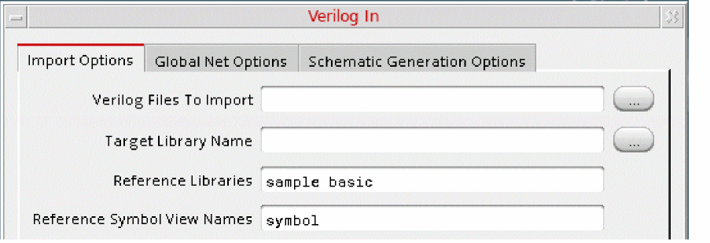

Importing Data with Verilog In
To import data files with Verilog In:
-
Open the Verilog In form.
The Import Options tab appears. -
Specify the files you want to import in the Verilog Files to Import field.
You can specify multiple files with paths. - Specify the library where the file must be imported in the Target Library Name field.
-
Specify the names of any reference libraries you need in the Reference Libraries field.
The following figure illustrates an example, where the filecan_counter.vis imported to the librarymyLiband uses the reference librariessampleandbasic.
 -
Specify any other options you need by expanding the relevant sections.
For example, if you want the imported file to have a custom view name, such asimportedFileSymbol, instead of the default view namesymbol, expand the Import Modules as section, and type the custom name in the Symbol View Name field. - If required, set the global net options as follows:
- If required, set the schematic generation options as follows:.
- Click OK or Apply.
Verilog In imports the design into the Virtuoso Studio Design Environment format and places it in the specified library.
For details on the fields in all tabs, see Verilog In Form.
Return to top